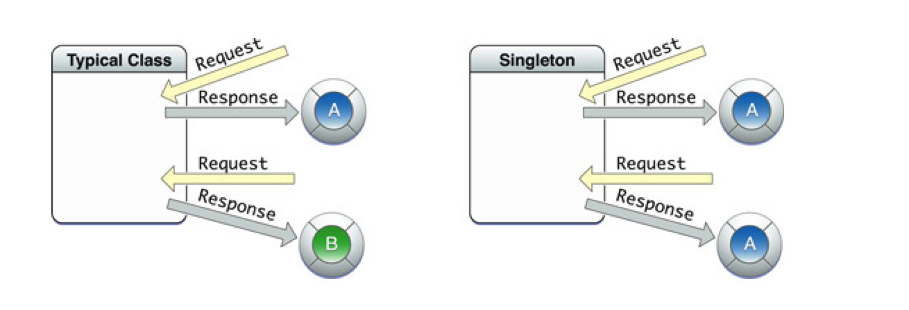

单例:代表着无论你对它使用多少次都是使用的同一个对象

如果所示,一个普通的类创建的对象,如果经过几次创建会出来几个不同的对象,而单例在此只会创建出一个对象
比如在iOS开发中有时你会创建出一个购物车类,而这个购物车无论你在程序的什么地方访问都应该是同一个购物车,这个时候你就可以采取单例模式.
// 一般命名为shared开始
+ (instancetype)sharedCar
{
static id instance = nil;
static dispatch_once_t onceToken;
// gcd中线程安全,只允许这段代码执行一次
dispatch_once(&onceToken, ^{
instance = [[self alloc] init];
});
return instance;
}
分析代码:
instance = [[self alloc] init];这句代码只会执行一次,也就说明该对象一旦创建出来,就不会被重新创建
这个单例可以帮助我们实现一些简单的本地化数据.
NSUserDefaults *user1 = [NSUserDefaults standardUserDefaults];
方法列表
- (void)setObject:(id)value forKey:(NSString *)defaultName;
- (void)removeObjectForKey:(NSString *)defaultName;
- (NSString *)stringForKey:(NSString *)defaultName;
- (NSArray *)arrayForKey:(NSString *)defaultName;
- (NSDictionary *)dictionaryForKey:(NSString *)defaultName;
- (NSData *)dataForKey:(NSString *)defaultName;
- (NSArray *)stringArrayForKey:(NSString *)defaultName;
- (NSInteger)integerForKey:(NSString *)defaultName;
- (float)floatForKey:(NSString *)defaultName;
- (double)doubleForKey:(NSString *)defaultName;
- (BOOL)boolForKey:(NSString *)defaultName;
- (NSURL *)URLForKey:(NSString *)defaultName NS_AVAILABLE(10_6, 4_0);
- (void)setInteger:(NSInteger)value forKey:(NSString *)defaultName;
- (void)setFloat:(float)value forKey:(NSString *)defaultName;
- (void)setDouble:(double)value forKey:(NSString *)defaultName;
- (void)setBool:(BOOL)value forKey:(NSString *)defaultName;
大家可以看到,在这里NSUserDefaults使用类似于字典,不管是取值还是存值,但是注意两点:
// 存储对象类型
[user1 setObject:@"zhangsan" forKey:@"name"];
// 存储基本类型
[user1 setInteger:18 forKey:@"age"];
// 取值
NSString *name = [user1 objectForKey:@"name"];
NSInteger age = [user1 integerForKey:@"age"];
注意:这个方法会自动周期性的进行调用,所以大家在测试的时候,有时不调用该方法也可以取值.
// 该方法可以进行数据更新,进行本地化
- (BOOL)synchronize;
第一次执行这部分代码
NSUserDefaults *user1 = [NSUserDefaults standardUserDefaults];
// 存储对象类型
[user1 setObject:@"zhangsan" forKey:@"name"];
// 存储基本类型
[user1 setInteger:18 forKey:@"age"];
// 取值
NSString *name = [user1 objectForKey:@"name"];
NSInteger age = [user1 integerForKey:@"age"];
[user1 synchronize];
然后我们把代码删除,重新写上这部分代码
NSUserDefaults *user1 = [NSUserDefaults standardUserDefaults];
NSString *name = [user1 objectForKey:@"name"];
NSInteger age = [user1 integerForKey:@"age"];
NSLog(@"name = %@, age = %ld", name, age);
打印结果
2015-04-15 22:45:18.334 OC_Lesson5[2200:213278] name = zhangsan, age = 18
发现这次居然取出上次存储的值了,这就是因为NSUserDefaults可以进行数据持久化